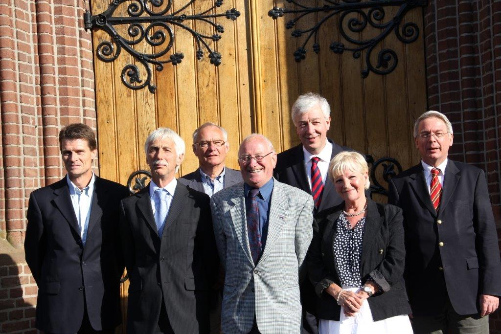

Culturele ANBI status Dierense
Toren : donaties zijn extra aftrekbaar.
De Stichting De Dierense Toren is door de Belastingdienst aangewezen
als een culturele ANBI ( Algemeen Nut Beogende Instelling) stichting.
Dit betekent voor donateurs van de Dierense Toren, dat voor donaties
een extra giftenaftrek geldt. Particulieren mogen in de aangifte
inkomstenbelasting 1,25 keer het bedrag van de gift aftrekken.
Ondernemingen die onder de vennootschapsbelasting vallen, mogen 1,5
keer het bedrag van de gift aftrekken in de aangifte
vennootschapsbelasting. Voor legaten en erfstellingen geldt dat zij
zijn vrijgesteld van successierecht.
Informatie in het kader van de ANBI regeling:
-
De naam van de
instelling :
Stichting De Dierense Toren
-
Het RSIN
(Rechtspersonen en
Samenwerkingsverbanden Informatie-
nummer): 008408063
( KvK nr. 41048726, vestigingsnummer 000022474781)
-
De contactgegevens
:
Hogestraat 12 te 6951 AS Dieren
email : info@dierensetoren.nl
-
De doelstelling
:
de Stichting De Dierense Toren stelt zich ten
doel het bevorderen van
het behoud van het karakter van Dieren in
het algemeen en van het
behoud van de Dierense Toren in
het bijzonder.
-
De namen en
functie van de
bestuurders
P.G.J. Breukink, voorzitter
N.B.L. Weijde - van de Klomp, secretaris
T.A.T.M. Krämer, penningmeester
mr. J.J.M. van Gessel, bestuurslid
H.B.N. Leeman, bestuurslid
J.M.M. Mulders, bestuurslid

-
Het beleidsplan
Het beleid van de Stichting De Dierense Toren is er op gericht de toren
te behouden en te onderhouden als beeldbepalend gebouw in Dieren en omgeving. Getracht wordt de toren in een bouwkundige goede conditie te houden. De middelen worden verkregen door donaties en door huuropbrengsten van de verhuurde ruimten in de toren en incidentele subsidies en giften. Vrijwilligers leven eveneens een belangrijke bijdrage aan het onderhoud.
-
Het beloningsbeleid
De bestuursleden ontvangen geen vergoeding en
verrichten hun werkzaamheden pro deo.
-
Verslag van de
uitgeoefende activiteiten in 2020
Nadat in 2015 een grondige restauratie van de buitenkant van de toren plaatsge-vonden ligt de aandacht op het dagelijks onderhoud van de toren. Door de corona pandemie vanaf 13 maart 2020 konden weinig activiteiten plaatsvinden in de toren. Met de huurder van de gebruiksruimten in de toren zijn de financiële regelingen daarop aangepast.
Gebruikelijk is om elk jaar deel te nemen aan de Open Monumentendag waarbij de toren ook beklommen kan worden: dat viel ook uit in 2020.
Elke zaterdagavond om 18:00 worden de klokken geluid en bij bijzondere gele-genheden zoals op Koningsdag worden de vlaggen uitgestoken uit de spits van de toren. Dat kon wel op 27 april 2020. Het kanon schieten bleef echter achterwege. In december werd weer een verlichte kerstboom bij de toren geplaatst. De boom was wederom geschonken door de Stichting Twickel. De toren wordt als beeldbepalend gebouw in het dorp en baken in het landschap ’s avonds aangelicht.
-
Financiële
verantwoording over
2019 en 2020 in hele Euro's
|
2019 |
2020 |
| Baten |
8480 |
3993 |
| Donateurs en giften |
5075 |
5194 |
| Totaal |
13.555 |
9187 |
Lasten |
|
|
| Bestuurskosten |
40 |
0 |
| Interest |
579 |
559 |
| Verzekeringen en belastingen |
1525 |
1741 |
| Algemene kosten |
810 |
500 |
| Onderhoudskosten |
411 |
1965 |
| Energiekosten incl. aanstraling |
3613 |
3198 |
| Totaal |
6978 |
7963 |
Exploitatiesaldo |
6577 |
1224 |
Aflossing leningen |
666 |
666 |
| Reservering groot onderhoud |
5911 |
558 |
| Totaal |
6577 |
1224 |